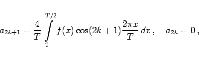
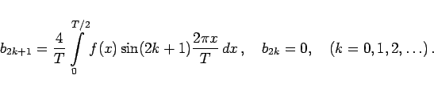

Inhalt Index DeskTop Bronstein

 Unendliche Reihen Fourier-Reihen Koeffizientenbestimmung für symmetrische Funktionen Symmetrien verschiedener Art
Unendliche Reihen Fourier-Reihen Koeffizientenbestimmung für symmetrische Funktionen Symmetrien verschiedener Art


Wenn für f(x + T/2) = -f(x) gilt (s. Abbildung), dann ergeben sich die Koeffizienten zu
|  | (7.102a) |
|  | (7.102b) |